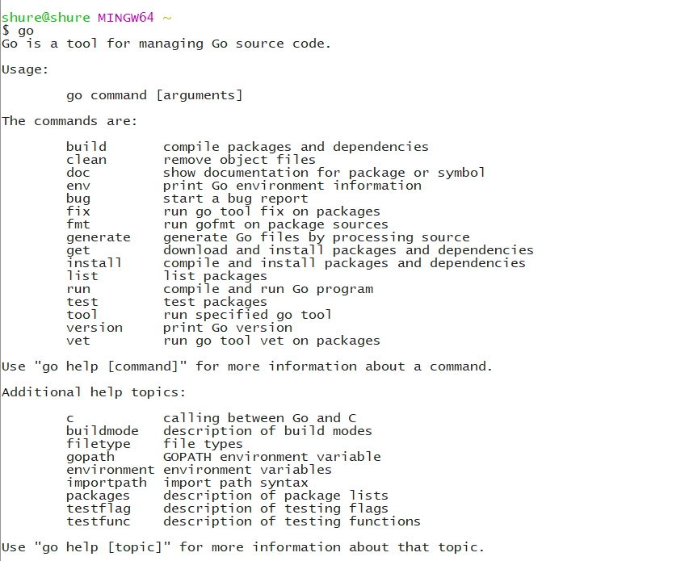

go教程-GO常用命令
编程是 10% 的科学，20% 天份，和 70% 的让这天份符合科学.
上一节中我们已经用到了一些 go 的命令和工具，今天来系统的看看这些命令有什么神奇黑科技。
go 常用命令
Go 语言自带有一套完整的命令操作工具，你可以通过在命令行中执行 go 来查看它们：

这些命令在我们平常开发中经常会用到，我们来看看一些常用的命令：
go build
go build 命令用于编译我们指定的源码文件或代码包以及它们的依赖包。
如果我们在执行 go build 命令时后面不跟任何代码包，那么命令将试图编译当前目录所对应的代码包，例如，我们在上一节go教程-GOPATH配置与本地教程安装中编译 mymath 包那样，当你执行 go build 时，他不会产生任何文件，因为该包中只包含库源码文件，或者测试源码文件。如果你需要在 $GOPATH/pkg 生成相应的文件，那就的执行 go install 了。
如果是 main 包，当你执行 go build 之后，会在当前目录下生成一个可执行文件，因为 mian 包是命令源码文件，是程序的入口文件，所以会生成可执行文件。如果你需要在 $GOPATH/bin 下面生成相应的文件，你需要执行 go install 或者使用 go build -o 路径/a.exe .
知识点：GO 语言的源码文件有三大类：命令源码文件、库源码文件和测试源码文件。他们的写法各有特点。命令源码文件是可执行的程序入口。哭源码文件锁一般用于集中放置待被使用的程序实体（全局常量、全局变量、接口、结构体、函数等等）。测试源码文件只要用于对前两种源码文件中的程序功能进行测试。
当然我们可以直接在 go build 后面跟上包路径，想这样 go build github.com/shure/mymath 也是可以执行的，这是因为我们已经将项目根目录添加到环境变量 GOPANTH 中了，这样我们就可以在任意目录执行这个命令了。
go build 还有很多参数，例如： -a 强行对所有涉及到的代码包（包含标准库中的代码包）进行重新构建，即使它们已经是最新的了。-n 打印编译期间所用到的其它命令，但是并不真正执行它们。
更多的参数就不细说了，有兴趣的朋友可以在此查阅https://studygolang.com/articles/5226
go clean
这个命令是用来移除当前源码包里面编译生成的文件。这些文件包括：
使用 go build 命令时在当前代码包下生成的与包名同名或者与Go源码文件同名的可执行文件。
执行 go test 命令并加入-c标记时在当前代码包下生成的以包名加“.test”后缀为名的文件。
_obj/ #(旧的 object 目录)
_test/ #(旧的 test 目录)
_testmain.go #(旧的 gotest 文件)
test.out #(旧的 test 记录)
build.out #(旧的 test 记录)
.exe #(go build 产生)
.test.exe #(go test 产生) 等等
一般的在 github 上提交代码时，运行此命令清除后提交源码文件。
go doc
go doc 命令可以打印附于Go语言程序实体上的文档。我们可以通过把程序实体的标识符作为该命令的参数来达到查看其文档的目的。
godoc 是一个很强大的工具，同样用于展示指定代码包的文档。在Go语言的1.5版本以后，它是一个内置的标准命令。
godoc -http=:6060 标记 -http 的值 :6060 表示启动的Web服务器使用本机的6060端口。之后，我们就可以通过在网络浏览器的地址栏中输入 http://localhost:6060 来查看以网页方式展现的Go文档了。
go fmt
一般的在其他编程语言中，对于代码风格没有严格的要求，但是 Go 语言则有标准的风格，对代码格式进行了强制，比如：左大括号必须放在行尾。不按照此格式的代码将不能编译通过，为了减少排版的问题，go 工具提供了一个 go fmt 命令，它可以帮助格式化你的代码文件，你只需要执行 go fmt xxx.go 你的代码将会被修改为标准格式。其实很多开发工具已经集成了该工具，当你按下 Ctrl + S 时，IDE 自动调用了该命令，进行了代码格式化。
更多时候使用 gofmt 而且需要带参数 -w ,否则格式化结果不回写入文件。gofmt -w src 可以格式化整个项目。
go get
go get 可以根据要求和实际情况从互联网上下载或更新指定的代码败一级依赖包，并对他们进行编译和安装。目前支持的有 BitBucket、Github、Google Code和Launchpad。这个命令实际上操作了两步：第一步是下载源码包，第二步是执行 go install 。
为了 go get 能正常工作，你必须安装相应的源码管理工具，比如：Github 使用 Git，Google Code 使用 hg 等。
go install
命令 go install 用于编译并安装指定的代码包及它们的依赖包。当指定的代码包的依赖包还没有被编译和安装时，该命令先去处理依赖包。与 go build 命令一样，传给 go install 命令的代码包参数，应该可以导入路径的形式提供。并且， go build 命令的绝大多数标记也都可以用于 go install 命令。
实际上 go install 分成了两步操作：第一步生成结果文件（可执行文件或.a包），第二步会把编译好的结果移动到 $GOPANTH/pkg 或者 $GOPATH/bin.
go run
go run 命令可以便宜源码并运行命令源码文件。由于包含了编译动作，因此可接受所有用于 go build 命令的标记，它不允许有多个包含 main 函数的命令源码包作为参数。
go test
执行这个命令，会自动读取源码目录下面名为 *_test.go的文件，生成并运行测试用的可执行文件。默认的情况下，不需要任何的参数，它会自动把你源码包下面所有test文件测试完毕.
其他命令
go 还提供了其它很多的工具，例如下面的这些工具
go fix 用来修复以前老版本的代码到新版本，例如 go1 之前老版本的代码转化到 go1
go version 查看 go 当前的版本
go env 查看当前 go 的环境变量
go list 列出当前全部安装的 package
参考与相关链接
参阅书籍：《Go Web 编程》
go 中文社区：https://studygolang.com/articles/5226
go 命令教程：https://www.jianguoyun.com/p/DW-1aogQ2vP0BRjTkiU (访问密码： kmNYam)
本教程 Girhub 地址：https://github.com/dddreams/go-tutorial

更多文章请关注微信公众号： zhiheng博客
如果文章对你有用，转发分享、点赞赞赏才是真爱 [斜眼笑]